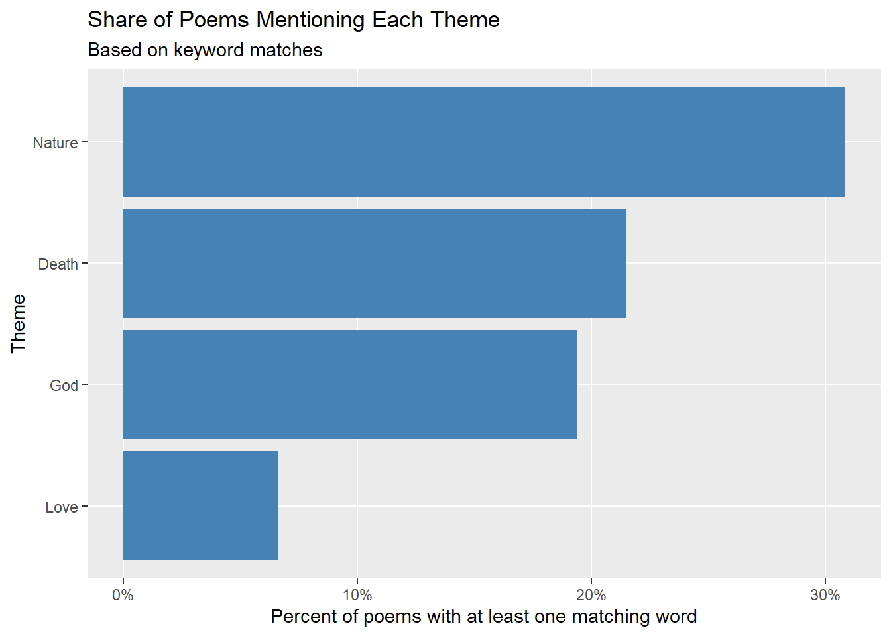
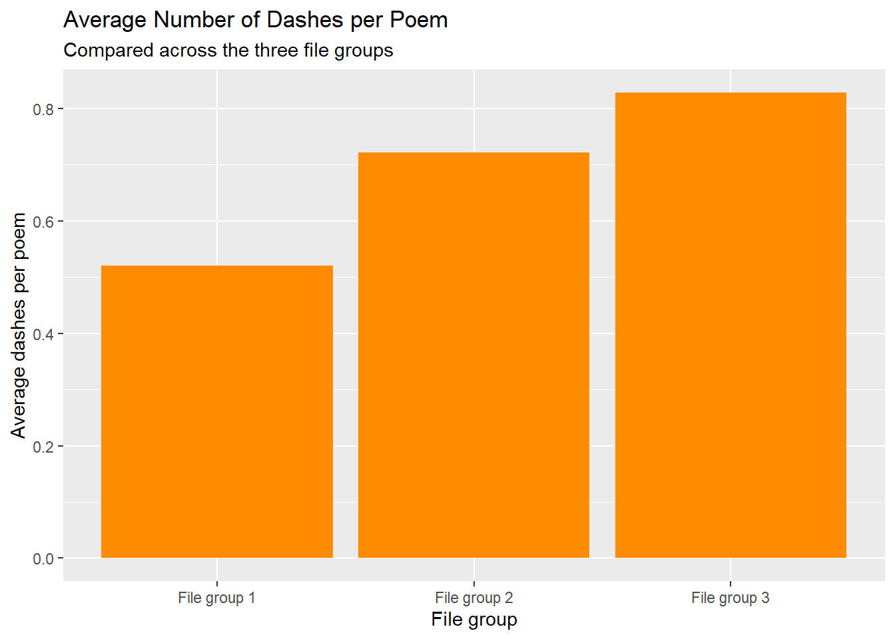

Emily Dickinson wrote short poems about broad subjects and used dashes frequently (--). I used string functions and regular expressions to ask:
Which themes (death, love, nature, God) show up most often in her poems?
Does her use of dashes differ across the three groups of poem files in the data?
Data source
R package: DickinsonPoems by Nicholas Horton, available at https://github.com/Amherst-Statistics/DickinsonPoems and installed with devtools::install_github("Amherst-Statistics/DickinsonPoems"). Original source: the Project Gutenberg edition of Emily Dickinson’s poems, https://www.gutenberg.org/files/12242/12242-h/12242-h.htm. * Each poem is stored as its own text file (like gutenberg1.txt001). I call the digit after “gutenberg” the “file group” (1, 2, or 3).
Reading in the data
The regular expression (?<=gutenberg)\\d uses a lookbehind to grab the digit that comes right after “gutenberg” in the file name.
# A tibble: 6 × 4
file text group n_dashes
<chr> <chr> <chr> <int>
1 gutenberg1.txt001 "I. \n \nSUCCESS. \n \n[Published in \"A Mas… File… 0
2 gutenberg1.txt002 "II. \n \nOur share of night to bear, \nOur … File… 1
3 gutenberg1.txt003 "III. \n \nROUGE ET NOIR. \n \nSoul, wilt th… File… 0
4 gutenberg1.txt004 "IV. \n \nROUGE GAGNE. \n \n'T is so much jo… File… 1
5 gutenberg1.txt005 "V. \n \nGlee! The great storm is over! \nFo… File… 1
6 gutenberg1.txt006 "VI. \n \nIf I can stop one heart from break… File… 0
Question 1: Which themes show up most?
For each theme I wrote a regular expression of related words. (?i) makes it ignore capital letters, and \\b marks a word boundary so that “die” can’t inside a longer word. str_detect() checks whether each poem contains a match, and the average of those TRUE/FALSE values is the share of poems with that theme.
# A tibble: 4 × 2
theme share
<fct> <dbl>
1 Death 0.215
2 Love 0.0662
3 Nature 0.308
4 God 0.194
Code
ggplot(themes, aes(x = share, y = theme)) +geom_col(fill ="steelblue") +scale_x_continuous(labels = scales::percent) +labs(title ="Share of Poems Mentioning Each Theme",subtitle ="Based on keyword matches",x ="Percent of poems with at least one matching word",y ="Theme" )

What the plot shows. Each bar is the percent of poems that contain at least one word from that theme, with the most common theme at the top. The most common theme is Nature, which appears in 31% of the poems. The least common is Love, at 7%. This is a rough measure, because a poem can use the word “grave” without being mainly about death.
Question 2: Does the dashes differ across file groups?
# A tibble: 3 × 2
group avg_dashes
<fct> <dbl>
1 File group 1 0.52
2 File group 2 0.722
3 File group 3 0.828
Code
ggplot(dash_by_group, aes(x = group, y = avg_dashes)) +geom_col(fill ="darkorange") +labs(title ="Average Number of Dashes per Poem",subtitle ="Compared across the three file groups",x ="File group",y ="Average dashes per poem" )

What the plot shows. Each bar is the average number of dashes (--) per poem in one file group, ordered from lowest to highest. The group with the most dashes is File group 3, at about 0.8 per poem. The group with the fewest is File group 1, at about 0.5. If the bars are close, the dash is a steady habit across her poems, and if they differ a lot, the groups are quite different in style.
Conclusion
Her poems return to a few big themes, and the dash is a regular part of her style. A limitation is that my keyword lists were chosen by hand, so they miss words I didn’t think of. The text for each poem also includes its title and number, which might add extra matches.